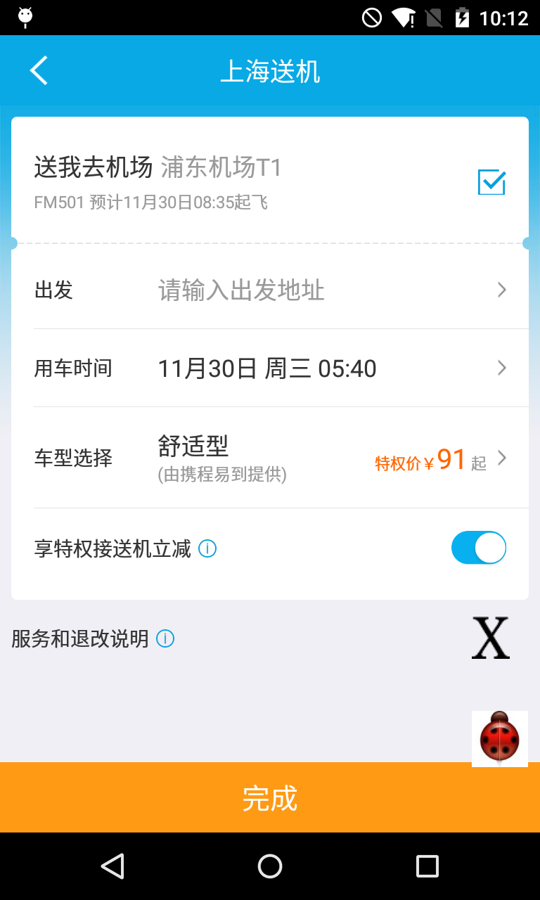
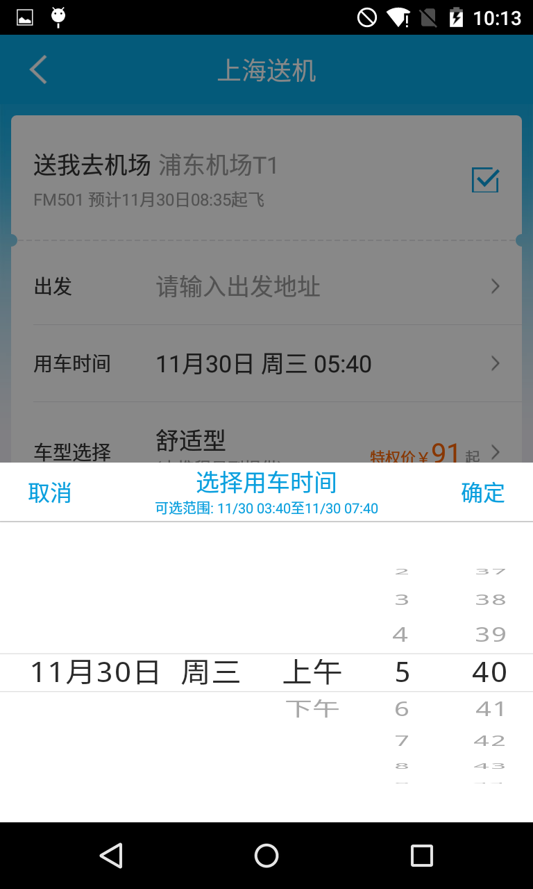
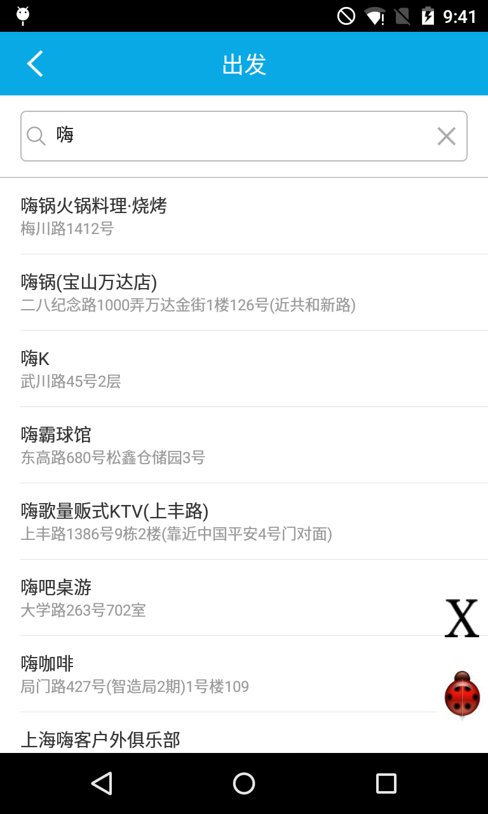
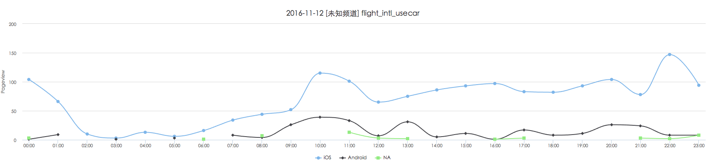
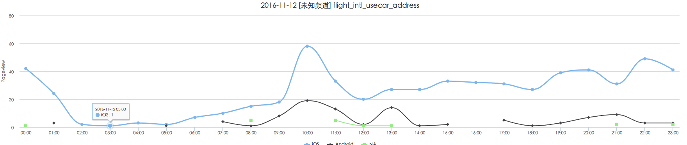
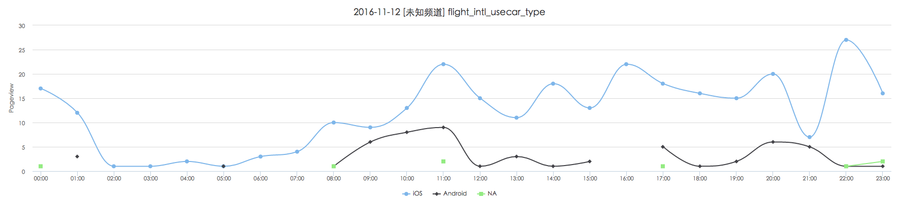
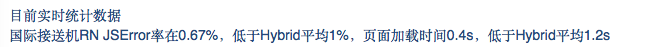

携程技术部门工作陈述
2016/11/16
机票BU
Android 开发工程师 刘义峰
个人简历
毕业于 11 年，至今 5 年多工作经历，主要工作是前端开发(pc & mobile)，热衷于用技术创造价值
10年10月～13年10月
在 www.linpus.com 实习和工作，主要工作是交互式 GUI 应用，涉及的平台包括 Meego, Web, Android
14年~15年
进入 www.droi.com 工作，开发ROM中自定义的桌面应用部分
15年～至今
入职携程，除开发安卓版本需求外，关注Web前端的发展和流行框架，平滑过渡到 React Native 开发
部分作品展示
3D Wallpaper + Launcher
3D Weather + Launcher

RN 接送机
  RN 空铁


主要工作
- v6.5 ~ v6.21 期间，首页到完成页，国内，国际，X 产品需求都涉及，保持在较低的故障率
- 重新实现了从首页到完成页的转场动画
- 实现主流程页面的 trace 埋点，为BI分析提供数据支持
- 国际接送机业务，国内空铁列表页
用户体验改进
1. 完成页的重构
引入流畅的动画交互，改善了用户体验，多版面的设计，为FIO营销留下了位置。
2. 主流程动画重构
主流程国内国际引入转场动画，实现更平滑的过渡效果
技术提升
1. 国际接送机转 RN
V6.20 开始，国际接送机尝试 RN
- 接送机填写页面
- 接送机地址选择页面
- 接送机车型选择页面
2016-11-12 接送机 PV
 2016-11-12 接送机 PV
 2. RN 空铁列表页重构
提升 RN 空铁列表页的体验
- 解耦列表页各组件的接口
- 提示筛选组件的扩展性
- 优化列表页数据量巨大时的刷新速度，
由 2s ~ 5s 左右降至 100ms ~ 200 ms
RCA及分享
1. Android 5.0 以上系统部分背景色异常消失
概述： V6.6 版本，需要适配 Android 5.0 以上系统，运行发现机票页面大部分白色背景变黑
分析及解决方法： http://shadyboss.cn/articles/android-bugee-like-problem-02/
2. 列表页 Animation 动画残留
概述： V6.8 版本，主流程动画重构后，填写页满仓返回列表页刷新时会有动画残留现象
分析及解决方法： http://shadyboss.cn/articles/android-bugee-like-problem-01/
3. Java Annotation 的介绍
后续工作
深入RN开发
分析 Android 版本 React Native 的实现原理，为深入优化 RN 性能作铺垫
RN实践经验的分享
分享RN实践中遇到的坑点和收获